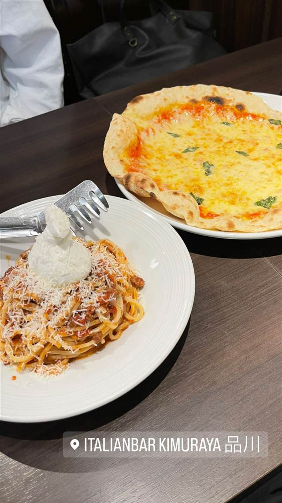
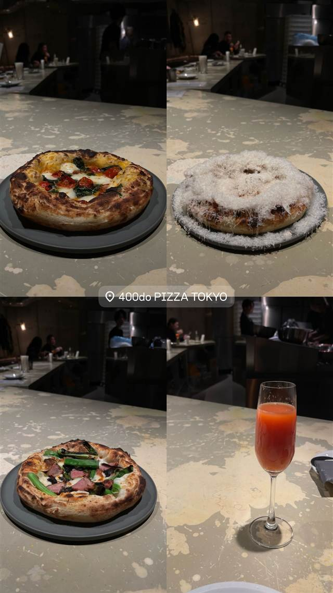
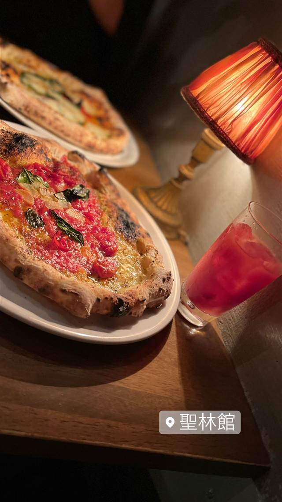
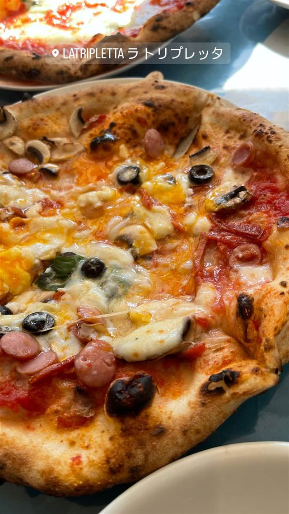
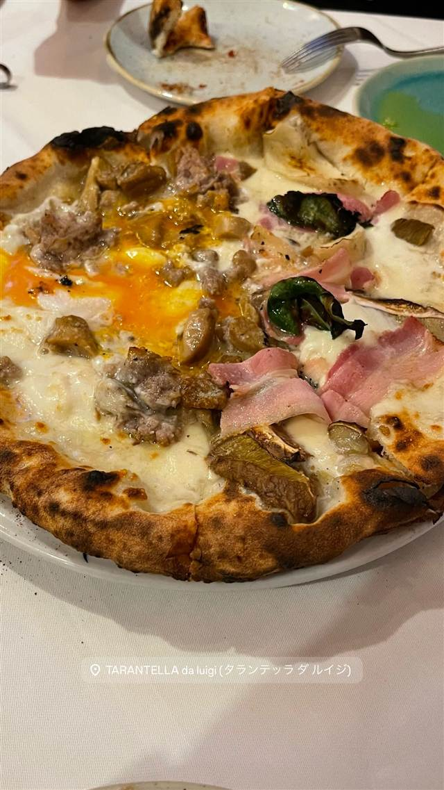

Italian BAR KIMURAYA 品川
和とイタリアンを掛け合わせた、新鮮魚介と飲み放題スパークリングの一軒
ITALIANBAR KIMURAYA 品川
品川駅近くのイタリアンバー。和の要素を取り入れた「和×イタリアン」がコンセプトで、旬の食材や新鮮な魚介を使った料理と飲み放題のスパークリングワインを気軽に楽しめる、Feast Harbor社運営の一軒。
REVIEWS
世間の評判
3.42食べログ
カジュアルイタリアンと宴会利用
- ボリューム満点のプリフィックスコースを評価する声が多い
- 種類豊富なワインやスパークリングの演出を評価する声がある
- 個室があり宴会や記念日の利用に向くという声がある
- 味や盛り付けが期待ほどではなかったという声もある
食べログ
| 系譜 | 東京を中心に30店舗以上を展開する飲食企業「株式会社Feast Harbor」が運営 |
|---|---|
| 看板 | 和×イタリアンをテーマにした創作イタリアン、新鮮な魚介料理 |
| こだわり | 旬の食材を使い、オープンキッチンで仕上げる料理。飲み放題のスパークリングワインを用意 |
| どこから | 都心 |
| 営業時間 | 月〜木 11:45-13:00、17:00-23:00 金 11:45-13:00、17:00-00:00 土 12:00-23:00 日 12:00-22:00 |
| 予算 | 昼 ¥1,000未満 夜 ¥3,000～¥3,999 |
| 予約 | 予約可 |
| 場所 | 品川駅 東京都港区港南2-5-15 KIDS-002ビル |
| メモ | 品川駅から徒歩2分、個室あり、宴会・記念日利用に対応 |
食べたもの：パスタとピザ
OFFICIAL
店からの知らせ
その日の限定や臨時の休みは、店のInstagramに出ます。
NEARBY
近い店・同じ系統の店
-

ピザ 飯田橋駅・牛込神楽坂駅 400℃ PIZZA TOKYO 岡山本店直系、4日仕込みの高加水生地で焼く蜂蜜がけピッツァ 夜 ¥10,000～¥14,999 -
 ピザ 恵比寿駅
L'Antica Pizzeria da Michele 恵比寿店
1870年創業のナポリ本店直伝、空輸チーズのマルゲリータ
昼 ¥2,000～¥2,999 夜 ¥4,000～¥4,999
ピザ 恵比寿駅
L'Antica Pizzeria da Michele 恵比寿店
1870年創業のナポリ本店直伝、空輸チーズのマルゲリータ
昼 ¥2,000～¥2,999 夜 ¥4,000～¥4,999
-
 ピザ 神谷町
Pizza 4P's Tokyo
ベトナム発、アジア30店舗超を経て麻布台に上陸した水牛モッツァレラのピザ
昼 ¥3,000～¥3,999 夜 ¥6,000～¥7,999
ピザ 神谷町
Pizza 4P's Tokyo
ベトナム発、アジア30店舗超を経て麻布台に上陸した水牛モッツァレラのピザ
昼 ¥3,000～¥3,999 夜 ¥6,000～¥7,999
-

ピザ 中目黒駅 聖林館（セイリンカン） マルゲリータとマリナーラの2種のみ、国産小麦を長期熟成 昼 ¥4,000～¥4,999 夜 ¥4,000～¥4,999 -

ピザ 武蔵小山 La TRIPLETTA 開業10カ月でビブグルマンを獲得した本格ナポリピッツァ 夜 ¥4,000～¥4,999 -

ピザ 白金高輪 タランテッラ ダ ルイジ（TARANTELLA da luigi） マルゲリータ考案者の子孫に師事した店主のナポリピッツァ 昼 ¥1,000～¥1,999 夜 ¥6,000～¥7,999
ONSEN & SAUNA